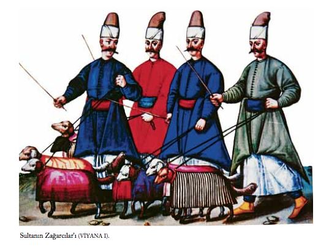

SARAY
Topkapı Sarayı Üzerine
Fâtih Sultan Mehmed, ilk sarayını bugün İstanbul Üniversitesi ’nin bulunduğu yere, üçüncü tepeye, yaptırdı. Sultan, sonra yeni bir saray tasarladı; bunun için daha güvenli olan bir yer seçmişti. Bu da Haliç ile Marmara Denizi arasındaki burunda kıyıdan Bizans surlarıyla çevrili olan bugün Sarayburnu diye bilinen yerdir. Saray adını surlardaki kapılardan biri olan Topkapı ’dan almıştır. Saray’ın yapımına yaklaşık 1459 ’da başlanmış ve 1478 ’te bitirilmiştir. 19. yüzyıla gelinceye dek Osmanlı sultanlarının evi olmuş, daha sonra sultanlar yeni saraylar yaptırmışlardır. Aşağı yukarı beş yüz yıl iktidarın merkezi olan bu sarayın duvarları arkasında Osmanlı İmparatorluğu ’nun tarihi yazılmıştır.
Giderek buranın karakteri bir kaleden saraya dönüşüm yapmış, yalnız Sultan’ın evi, makamı olmakla kalmamış, yüksek yargı, yürütme ve yasama güçleri ile görevlilerin sanat ve bilimde eğitimleri için bir merkez de olmuştur. Topkapı Sarayı birçok değişimler sürecinde gelişmiştir. Yıllar boyunca birbiri ardınca, sultanlar yeni binalar katmışlar. Bir dizi büyük yangınlarla birçok erken tarihli binalar yok olmuş ve sık sık onarımlar yapılmıştır. Kimi yapılar eklenmiş, kimileri de tamamen yok olmuştur. Bu sürecin sonucunda günümüze başlangıçtaki yapılardan pek azı gelebilmiştir. Bu bakımdan 15. ve 16. yüzyıldan birinci elde bilgiler çok değerlidir.
Bu kitapta Topkapı Sarayı ’nı Osmanlı İmparatorluğu ’nun en parlak döneminde incelemeye çalıştım. Kitabın bütününde olduğu gibi Topkapı Sarayı için de iki tür kaynağa başvuruldu. Birincisi görgü tanıklarının yaptıkları resimler, bir de görgü tanıklarının yazdıkları.
Topkapı Sarayı üzerine en iyi resimler Topkapı Sarayı ’nda saklanan Hünernâme ’nin ikinci cildinde bulunan 5 minyatürdür. Burada ilk minyatür ilk kapıyı, Bâbıhümâyûn ’u, Birinci Avlu ’yu ve Orta Kapı ya da Bâbüsselâm ’ı göstermektedir. İkinci ve üçüncü minyatürler ise, bunlardan biri avlunun doğu kesimini, ikincisi ise batı kesimini göstermektedir. Burada Dîvân ’ın toplandığı Kubbealtı da görülmektedir. Dördüncü ve beşinci minyatürlerde ise Üçüncü Avlu yer almaktadır. Bunlardan birisi avlunun doğu kesimini, bu arada üçüncü kapı ya da Bâbüssaade’yi ve Arz Odası ’nı göstermektedir. Beşinci minyatür ise avlunun batı kesimini ve Harem ’i betimlemektedir. Bu minyatürleri, daha önceki çeşitli yayınlarda kullanıldıkları için tekrardan kaçarak bu kitaba almadık. Bunun yerine yabancı görgü tanıklarının yaptıkları resimleri kullandık. Bunların ikisi Viyana, birisi de Dresden Albümü’ndendir. Bilgi vermek bakımından günümüzdeki fotoğraflardan hiç aşağı kalmazlar. Bildiğim kadarıyla bunların çoğu ilk kez bu kitapta yayımlanmaktadır.
İlk kümedeki resimler birinci kapıyı göstermektedir. Bu bölümün başında yer alan bu resimde Aya İrini ’nin kubbesi de görülmektedir. İkinci grup resimde Birinci Avlu ’yu görüyoruz. Bu resimlerde günümüze kalmamış yapılar da göze çarpmaktadır. Bunlardan biri de şikâyetçilerin dilekçelerini verdikleri Deâvî Kasrı ’dır. Aynı resimlerde Orta Kapı ve İkinci Avlu ’nun küçük bir kesimi görülmektedir. Üçüncü kesim resimlerde İkinci Avlu ’yu görüyoruz. Bugüne kalmamış yapılardan biri saray okulunun hastahanesi, öteki ise bir çeşmedir. Bu resimlerden biri de Dîvân-ı Hümâyûn ’u toplantı halinde göstermektedir: Veziriâzam, iki kazasker (Rumeli ve Anadolu), Reisülküttab, İstanbul Kadısı, Defterdar, Nişancı, Yeniçeri Ağası, Kaptan Paşa.
Kadınlı erkekli bir kalabalık Dîvân ’ın önünü doldurmaktadır. Bahçede ayrıca Dîvân kararıyla falakaya yatırılanlar görülmektedir. Dîvânı gösteren bir başka resimde de Veziriâzam’ın yabancı elçi grubuyla yemek yemekte olduğu dikkati çekmektedir. Elçi, Veziriâzam ’ın sofrasında yer verilerek onurlandırılır.
Altıncı grup resim Üçüncü Kapı ve Üçüncü Avlu ’dan yalnız Arz Odası ’nı göstermektedir. Resim burada üst üste iki resimden oluşur; birinci resim, Üçüncü Avlu ’ya açılan üçüncü kapıyı dizi sütun ve kemerleriyle göstermiştir. Bu resim alttaki resmin üzerine tutturulmuştur. Bu, yukarıya kaldırılınca altındaki resim Arz Odası ’nın içini göstermektedir.
Burada Üçüncü Avlu ’da dar sütunlu revak da görülmektedir. Günümüzde Üçüncü Kapı çok değişik bir görünümdedir. Padişah bu kapıdan giren yabancı elçileri Arz Odası ’nda kabul ediyordu. Arz Odası ’nın içini gösteren bir başka resimde elçi heyetini III. Murad ’ın kabul edişini görüyoruz. Burada ocak, işlemeli yastıklar, zengin kumaşlarla kaplı sedirler, çiniler, halılar, tavan süslemeleri ve sultanın gücünü simgeleyen tavandan sarkan iki altın top çok ayrıntılı yapılmıştır.
Dresden Albümü’nden buraya aldığımız bir resimde bir saray veya konak gösterilmiş, kime ait olduğu belirtilmemiştir. Ancak bunun bir paşa, bir vezir gibi önemli bir kişinin saray veya konağı olduğu bildirilmiştir. Ancak resim bir soruyu da beraberinde getirmektedir. Önce ortadaki binanın cephesi Çinili Köşk ’e benzemektedir. Fâtih Sultan Mehmed ’in 1472 ’de yaptırdığı bu bina, Topkapı Sarayı ’ndan önce yaptırılmıştır. Resimde bu binanın payandalar üzerinde oturtulmuş ileri uzanan iki kanadı vardır. Pencereler kafeslidir, büyük olasılıkla bunlar binanın harem kesimindedir. Ancak bu kanatların soldakinin bitiminde biri aşağı inen, biri de yukarıya çıkan iki merdiven görülmektedir. Aşağıya inen normal olarak dışarıya çıkış içindir, ancak yukarıya çıkanı, bu kanadın bir başka binaya bağlantısını düşündürüyor. Bir tahmin de bu iki kanadın Çinili Köşk ’ün Topkapı Sarayı ’na bağlandığı yolundadır. Ancak bu bir tahminden ileriye gitmez.
İngiltere Kraliçesi Elizabeth, kapitülasyonların yeniden verilmesi umuduyla Sultan III. Mehmed ’e armağanlar göndermek istemişti. Ancak, bunların gönderilebildiği yıl olan 1599 ’da İngiliz elçisi Sir Edward Barton ölmüş bulunduğundan, armağanlar Sultan’a elçinin kâtibi Hery Lello tarafından sunulmuştu. Bu armağanların en ilginci, Thomas Dallam tarafından yapılan ve sarayda kurulması için yapıcısıyla birlikte gönderilen bir orgdu. Dallam, İstanbul ’da kaldığı sırada tuttuğu gezi notlarında çalgının, en görkemli, en büyük konut olan saraya Boğaz ’dan kayıklarla götürüldüğünü yazar.
Bu notlara göre, sarayın bulunduğu alanı çifte duvarlar sınırlıyordu. Dış duvarlarda yer alan kapılarının her birinde, iriyarı kapıcılar vardı. Bunların görevi içeri girip çıkanı kollamak, gözcülük etmekti. İç duvarlardan açılan kapılar demirden yapılmış olup sürekli kapalı tutulur, sarayla ilgisi olmayan kimsenin içeri girmesine izin verilmezdi. Bu kapılar Acemioğlanlar tarafından açılırdı. Dış duvarlarla iç duvarlar arasındaki uzaklık dört yüz metreye yakın, yüksekçe bir alandı. Burası, bakımını Acemioğlanların yaptığı, dünyada eşi görülmemiş bostanlarla kaplıydı. Bu alandaki tek konak da Bostancıbaşı ’nın konağıydı. İç duvarların içindeki alandaysa sultanın sarayı ve sarayla ilgili, avluları mermer kaplı, çok görkemli yapılar vardı. Bunların çevresindeki bahçelerde meyve ağaçlarıyla üzerinde her türlü üzüm bulunan asmalar yer alıyordu. Saray’ın bulunduğu bu bölümde orgun yerleştirileceği konut, Saray’a oranla daha küçük bir yapıydı. Burası, tavan ve duvarlarındaki renkli, yaldızlı, oymalı, cilâlı süslemeleriyle küçük, güzel, biraz da garip bir yerdi. Dallam ’ın gezisi sırasında III. Mehmed on dokuz erkek kardeşini burada boğdurttuğu için burası bir zevk yuvası olduğu kadar bir tür kıyım eviydi de. Saray’ın ana yapısının önünde, başlıkları yaldızlanmış pirinç olan çift sıra sütunlar bulunuyordu. Orgun yerleştirildiği evin üç bir yanında bulunan duvarların üzerinde kepenkler vardı. Bunlar çoğunlukla açık bırakılır, rüzgâr, fırtına, yağmur gibi hava koşullarında kalın pamuklu perdeler aşağıya, iyi havadaysa yukarıya çekilirdi. Ev dördüncü yanından başka bir eve bitişikti. Bu yandaki duvar, insanın bakınca rahatça kendisini görebileceği kadar parlak, çok iyi bir türde, somaki mermerle kaplıydı. Bu evde masa, iskemle, koltuk gibi eşyalar olmayıp yalnızca bir sedir vardı. Bir yanda da içinde her türden, rengârenk balıkların yüzdüğü bir havuz bulunuyordu [DALLAM 67-69].
Dallam ’ın anılarında, deniz kenarında küçük, güzel bir köşke, büyük bir olasılıkla İncili Köşk ’e de değinilmekte. Burası kimi kez sultanın yemek çağrıları için, çoğunlukla odalıklarıyla buluşma yeri olarak kullanılıyordu. Yapının kare biçimindeki damı kurşunla kaplıydı ve en tepede bir prizmayla bitiyordu. Tavanı yaldızlı ve renkli süslemelerle bezenmişti. Köşkün denize bakan yüzünde Boğaz ’ın ve Haliç ’in gözlenebileceği bir taraça vardı.
Bu köşkün arkasında da sütunlar üzerine yapılmış başka güzel evler bulunuyordu. Bunların da tavanları yaldızlı, renkli süslemelerle bezenmiş, yerleriyse değerli halılarla kaplanmıştı. Dallam, anılarında, bu güzellikleri anlatmaya sözcüklerin yeterli olamayacağını belirtir [DALLAM 78].
Harem ’in özelliğinden dolayı, burayla ilgili bilgiler bize doğrudan doğruya görgü tanıklarından değil de, dolaylı olarak ulaştığından, orgu yerleştirmek için her gün saraya girip çıkabilen Dallam ’ın notları özel önem taşımaktadır. Örneğin, kendisine yardımcı olmak için görevlendirilenlerden birisi, Dallam ’ın Harem’i uzaktan gözleyebilmesini sağlamıştır. Dallam, bununla ilgili olarak, Sultan’ın odalıklarını demir bir kafesin arkasından görebildiğini yazar. Harem ’in bahçesinde güle oynaya top oynayan kızları önce uzaktan erkek sanmış, oysa bellerine varan uzun saçlarını görünce bunların kız, hem de çok güzel kızlar olduğunu anlamıştır. Kimisinin örgülü saçlarının ucuna inci ya da başka değerli taşlardan süsler tutturulmuştur. Başlarında sadece tepelerini örten küçücük takkeler vardır, bürümcükten yapılmış gömleklerinin üzerine bellerine kadar inen küçük ceketler, altına beyaz ince kumaştan, içinden baldırlarının sezilebildiği dizlerine kadar inen şalvarlar giymektedirler. Çıplak boyunlarına yalnızca inci ya da başka taşlardan yapılmış gerdanlıklar takmışlardır. Kimisinin ayağında güderiden yapılmış çarık, kimisinin de “pantufla” denilen, kalın çuhadan yapılmış yüksek topuklu terlikler vardır. Kimisinin bacağı çıplak olup ayak bileğinde halhal bulunmaktadır. Dallam, kızları gözlemekten çok hoşlandığını, kendisine bu olanağı sağlayan görevlinin, Dallam ’ın gözleme süresini uzatması karşısında kızgınlıkla ayağını vurup onu ancak oradan uzaklaştırabildiğini de ayrıca belirtir [DALLAM 74-75].
Dallam ’ın anılarında sarayda bulunan iki yüz kadar içoğlanının da giysilerine yer verilmiştir. Bunlar dizlerine inen sırmalı kumaştan yapılmış tulum, ipekten gömlek, bunun üzerine cepken giyerler; başlarında küçük takkeler, ayaklarında da güderiden çarıklar bulunurdu. Dallam, içoğlanlarının saçlarının iyice kazınıp yalnızca kulaklarının arkasında sincap kuyruğunu andıran bir tutam saç bırakıldığını söyler [DALLAM 67].
Pedro, Sultan’ın sarayıyla ilgili olarak çok bilgi vermemekle birlikte, deniz kenarında yer alan sarayın Hıristiyan dünyasında bir eşi bulunmadığını söyler. Sarayla deniz arasında, kayıklara binmek üzere geçilen, yeşime benzeyen mermerle kaplı çok büyük bir avludan, bunun tam ortasında da üzerinde iki yüzden fazla oyuk bulunan bir geçitten söz eder. Saray’ı, kent duvarlarını andıran yüksek duvarlar çevreler, bunların tepesinde de üzerinde toplar bulunan altı kule vardır. Pedro, bu kulelerden birisinde saklanan hazinenin eşini dünyanın başka hiçbir yerinde görmediğini belirtir. Saray’daki görevlilerle görevlerinden söz ederek [VIAJE 217-218], Dîvân meclisinin yapısı, üyelerinin aylıkları, sultanın Dîvân toplantılarını kafes arkasından gözlemlediği, Dîvân üyelerinin toplantıdan sonra birlikte yemeleri gibi çok çeşitli konularda da bilgi verir. Örneğin, Dîvân ’ın cezalandırdığı bir kimse kendisine verilen cezayı işlediği suç için çok bulursa uzun bir sopanın üzerine dilekçesini yazar, cuma günü sultanın namaza gitmek üzere at üzerinde saraydan çıkışını bekler, dilekçesini bağışlanmak umuduyla ona uzatır [VIAJE 216-217].

Bütün alanı, çapı yaklaşık 2 mil olan yüksek, sağlam bir sur çevreliyordu. Ortadaki küçük tepeden denize doğru, içinde küçüklü büyüklü bir sürü bina olan, güzel bir bahçe vardı. Sultan’ın yazın kaldığı ana binada bir galeri yer alıyordu. Kolonlar üzerinde yükselen bu galerinin çevresinde manastırlarınki gibi bir bahçe vardı ve iki yüz kadar oda bu galeriye açılıyordu. Tepenin daha aşağısında Bayezid ’in yarım daire biçiminde yapılmış bir kameriyesi vardı. Madenî çubuklarla bir arada tutulan, camdan yapılmış bu kameriyenin altından pırıl pırıl bir kaynak başlıyor ve bahçe boyunca akıyordu. Bayezid buraya dinlenmek üzere geliyor ve suyun sesiyle keyifleniyordu. Fakat Nicholay burayı gördüğünde kameriye yer yer yıkılmıştı. Duvarla çevrelenmiş bu alan içinde Sultan’ın eşinin ayrı bir sarayı vardı. Bu sarayda görkemli hamamlar bulunuyordu. Bir başka bina daha vardı ki saray hizmetlileri yedi ya da sekiz yaşına dek burada kalırlardı. Sultan’ın en iyi atlarından elli kadarı sarayın ahırında korunurdu.
Saray’ın ana girişi Ayasofya ’ya bakan büyük kapıydı. Kemerler ve kapılar değişik renklere boyanmıştı. Üzerlerine altından Arap harfleriyle yazılar yazılmıştı. Bu geçit, düzenlenmemiş geniş bir bahçeye açılıyordu. Bu bahçenin uzak bir köşesinde iki büyük kule arasında başka bir kapı daha vardı. Bu kapıyı çok sayıda muhafız ve Yeniçeri bekliyordu. Bunların silâhları ve zırhları kapıda asılıydı. Burada herkes attan inip yandaki bahçeye yürüyerek gitmek zorundaydı. Paşalar bu bahçede, haftada üç kez halka açık konuşma düzenlerlerdi. Dil veya din ayrımı gözetilmeksizin herkes gelir, devlete ait konular, davalar ya da çözümlenmesi gereken her tür iş konuşulurdu. Bu binanın kalabalığına karşın, büyük bir sessizlik vardı. Tek tük öksürük sesi duyulurdu.
Ana kapı kara yönündeydi. Sultan kayıkla gezmek istediğinde, surdaki küçük kapıdan sarayın dışına çıkardı. Orada bahçe kıyıya dek uzanırdı. Sultan sık sık Anadolu yakasında yaptırdığı bahçeye gitmek isterdi. Burası Kadıköy diye bilinirdi. İki direkli gemi deniz kapısına bağlanırdı. Sultan bu gemilerden birisiyle Boğaz ’dan karşıya Bostancıbaşı ve adamları eşliğinde götürülürdü. İkinci bir gemi güvenliği sağlamak için onları izlerdi [NICHOLAY 51b-52a].
Sultan Süleyman ’ın sarayı, Boğaz ’ın Marmara Denizi ’yle birleştiği noktada, kıyının denizin içine doğru sarktığı bir yerdeydi. Buraya Bâbıâli deniyordu. Üç mil uzunluktaki duvarlar içerisinde hem ikametgâhı, hem de Dîvânı yer alıyordu. Bu sarayın yapımı Fâtih Sultan Mehmed tarafından başlatılmış ve Ramberti ’ye göre, Sultan Mehmed vasiyetnâmesinde sarayın yaptırdığı câminin mülkü olmasını ve bu câmiye günlük 1000 akçe (20 düka) ödenmesini buyurmuş. Bu ödeme Sultan Süleyman ’ın hükümdarlığı sırasında da sürüyormuş.
Saray’da Sultan’a özel olarak seçilmiş altı genç erkek hizmet ediyordu. Gündüzleri bu gençlerden ikisi sultana özel odasında hizmet veriyordu. Geceleyin nöbette yine iki genç oluyordu. Bunlar sultan uyurken nöbet tutuyorlardı. Biri ayakucunda diğeri başucunda, ellerinde yanar meşalelerle. Bunlar sabahleyin Sultan’ın giyinmesine yardım ederlerken, her gün onun kaftanının ceplerinden birine 1000 akçe, diğerine 1000 altın düka koyarlardı. Geceleyin, gençler Sultan’ı yatmaya hazırlarken onun ceplerinde buldukları tüm parayı bahşiş olarak alırlardı. Ancak söylendiğine göre Sultan’ın ihsan dağıtırken eli öylesine açıktı ki ceplerinde yalnızca birkaç kuruş kalırdı. Sultan avlanmak için ya da başka bir amaçla saraydan çıkarken kendisine, Haznedarbaşı eşlik ederdi ve Sultan istediği zaman dağıtabilsin diye ceplerindekilerin yanı sıra yüklü bir miktarda parayı o taşırdı [RAMBERTI 243-244].
İlk avlu oldukça genişti. Burada, sağda, eski Bizans kilisesi Aya İrini vardı. Öbür taraflarda birçok dükkân yer alıyordu. Bu dükkânlarda saray zanaatkârları kendi ürünlerini yaparlar ve satarlardı. Denize inen yokuştaki bahçeler birçok duvarla çevriliydi ve çok iyi korunurdu. Gerlach, elçilik mensuplarıyla birlikte sarayı gezdiğinde ikinci bahçeye açılan kapıda bir hol olduğunu görmüş. Ayrıca bu bahçenin çevresinde kemerler vardı. Her iki taraftaki yüksek duvarlar üzerinden görebildiği kadarıyla çok geniş bahçeler yer alıyordu. Bu bahçelerde geyikler olduğu söylenmişti kendisine. Kadınlar bu bahçelerde gezinebiliyorlardı. Bu ikinci bahçede birkaç yüz asker sessizce nöbet tutuyordu. Elçilik grubu bu askerlerin önünden geçip üçüncü kapıya geldi. Bu kapı Sultan’ın dairelerine gidiyordu. Buraları Yeniçerilerce korunuyordu [GERLACH 111].
Wratislaw ve arkadaşları her zaman olduğu gibi yanlarında bir Yeniçeri olduğu halde Sultan’ın ahırlarını gezdiler. Sultan’ın kullandığı atları, tırıs gidenleri, arabaya koşulanları gördü; ayrıca develeri de. Her yıl Arabistan ve Berberistan ’dan tay olarak getirilen çok sayıda aygır bulunuyordu. Çok küçükken bunların ne kuyrukları ne de yeleleri vardı. Türkler atlar dört yaşına gelinceye kadar binmezlerdi. Wratislaw aslında atların güçlü olduğunu yazıyor. Oysa Bohemya ’da atlar gençken çok çalıştırılırlardı. Bu yüzden de Türklerin atları gibi dayanıklı ve kuvvetli olamazlardı.
Bu gezinti sırasında Wratislaw ve arkadaşlarına sultanın yazlık sarayını gezmelerine, bahçesine girmelerine izin verildi. Bahçede çok güzel kokulu çiçekler topladılar. Büyük ve harika bahçe dereciklerle sulanıyor ve ağaçlarla gölgelendiriliyordu [WRATISLAW 169-171; 173].
Saray’ın bahçeleri çok genişti. Ramberti ’ye göre, Bostancıbaşı ’ya ya da Başbahçıvan ’a, bahşişlerin yanı sıra, günde 50 akçe ödenirdi. Kâhya yla baş yardımcı da günde 20 akçe alıyordu. Onun denetiminde çalışan ve her birinin emrinde on bahçıvan bulunan Bölükbaşılar vardı. Yaklaşık otuz beş bahçıvan ya da bostancı olurdu. Bunlar saraydan verilen bir örnek mavi giysi ve gömlek giyerler ve günde beş akçe kazanırlardı. Bu bahçıvanlar Acemioğlanlardı. Saray’dan ayrıldıklarında Yeniçeri olurlar ya da başka uygun büro işlerine yerleştirilirlerdi. Saray bahçeleri ve bostanları öylesine verimliydi ki bu bahçelerdeki meyve ve sebzelerin satışından sağlanan gelirle Sultan’ın günlük giderleri karşılanabiliyordu. Sultan’ın sarayının önünde demir atmış iki küçük gemi bulunurdu. Sultan, bahçeler boyunca gezintiye çıktığında bahçıvanlar küreğe, Bölükbaşı da dümene geçerdi [RAMBERTI 244-245].
Sultan’ın sarayında çok sayıda bina, köşk, bahçe ve havuz vardı. Bahçelerin bakımından Bostancıbaşı sorumluydu. Bostancıbaşı ’nın emrinde iki yüz-üç yüz kadar Yeniçeri çalışıyordu. Bunlara Acemioğlan deniyordu. Yüksek sarı başlıklar giyiyorlardı. Sultan, eğlence merkezlerinden birine ya da kentin dışındaki kıyılara bile gittiğinde deniz yoluyla giderdi. Bir ya da üç kişiyle çıktığı bu küçük yolculuklarda Sultan yirmi dört kürekçinin çektiği kayığında yerini alırdı. Bostancıbaşı dümen yekesini tutardı. Sultan, Bostancıbaşı’nı o denli severdi ki yolculuk sırasında onunla söyleşirdi [CHESNEAU 39].
Pazarları, pazartesileri ve salıları tüm paşalar, müftü, kadı, hazineci ve yüksek rütbeli devlet memurlarla şafak vakti saraya giderlerdi. Sabah 10 ’a kadar toplantı yaparlardı. Aynı çağı yazan diğer yazarlar Dîvân ’ın haftada dört gün toplandığını belirtirler. Her tür hukuk davaları onlara getirilirdi. Savunma veya dilekçe olmazdı. Yasaların tartışması kısa ve özlü olurdu. Karar çok kısa sürede verilirdi. Dîvân aynı zamanda imparatorluk gelirleriyle de uğraşırdı. Gelirler memurlar tarafından dikkatle rapor edilirdi. Her toplantı sonunda paşalar sultanı beklerdi. Mehmed Paşa, Sultan’a yaptıklarını anlatırdı. Sultan avda olunca Mehmed Paşa ona Dîvân ’da yapılanları yazılı bir raporla bildirirdi [CANAYE 131-132].
Sultan’ın sarayında yüz elli aşçı vardı. Erkekler ve oğlan çocukları hepsi Acemioğlanlar arasından seçilmişti. Usta aşçılara günde 8 veya 10 akçe, oğlanlaraysa 3 akçe ödeniyordu. Hepsi yılda bir kez baştan ayağa giydirilirdi. Göğüs hizasında yassı madenî düğmelerle vücutlarına iyice yapışan uzun deri giysiler giyerler, başlarına yüksek, beyaz zerkülâh denilen başlıklar takarlardı. Bu başlıklar Yeniçerilerinkine benziyordu ancak herhangi bir süs veya altın yaldızdan kenarları yoktu. Sultan’ın yemeği özel bir mutfakta ayrı pişiriliyor, porselen tabaklarla sunuluyor ve onun önünde kesiliyordu. Dört görevli hem Sultan’ın hem de diğer saray mensuplarının yemeklerinin hazırlandığı genel mutfağı denetliyordu [NICHOLAY 90b].
Sultan’ın oğulları ergenlik çağına geldiğinde ya da yaklaştığında, annelerinden ayrılır ve başka bir sarayda yaşamaya başlarlardı. Burada savaş sanatını, ok, yay, kılıç, pala, kalkan kullanmayı, arkebüs ateşlemeyi ve ata binmeyi öğrenirlerdi. Bu süre içinde sıkı sıkıya denetlenirler, iffetsiz, ahlâksız, kötü ya da onları kötü yola sürükleyebilecek insanlardan uzak tutulurlardı [POSTEL 34-35].
Devşirme oğlanların en yakışıklı ve en zekileri Sultan’ın hizmetine verilirdi. Günde 8 akçe bağlanan ve tepeden tırnağa giydirilen bu oğlanlar, Sultan’ın sofrasını da içeren tüm hizmetlerini yaparlar; yiyeceği yemekleri bile önceden bunlar tadarlardı.
Büyüdükleri zaman devlet memurluğuna getirilen veya orduya alınan bu genç oğlanlara günde 18 akçe bağlanırdı. Sultan bu devşirmelerin en zeki ve değerlilerine paşalık, kadılık, vâlilik veya başka önemli görevler de verirdi. Sultan’ın her sarayında bu devşirme oğlanlardan üç yüz, dört yüz veya beş yüz tanesi eğitilirdi [DERNSCHWAM 139].
Saray ve Çevresi
Fâtih Sultan Mehmed, sarayını kentin ortasına yaptırtmıştı. Sağlam surlarla çevrili olan bu sarayda çok sayıda ev, mutfak ve başkaca gerekli binalar vardı. Burası daha sonra Eski Saray olarak anılmaya başlandı. Sultan, Topkapı ’ya geçince, bu Eski Saray imparatorluk haremi olarak kullanılır oldu. Nicholay, İstanbul ’dayken burada iki yüzü aşkın câriyenin yaşadığı sanılıyordu. Hemen hepsi Hıristiyan olan bu câriyelerin bir kesimi savaşta, denizde veya karada tutsak alınmıştı. Öbürleri tüccarlar tarafından Sultan’a sunulmak üzere beylerbeyi ne, paşalara ve kaptanlara satılmıştı. Birçok ulustan kız vardı ama çoğu Yunan, İtalyan veya Macar ’dı. Harem’i hadım edilmiş bir haremağası yönetiyordu. Haremağasına günde 60 akçe, yılda iki kez ipekli giysiler veriliyordu. Emrinde kırk hadım edilmiş erkek çalışıyordu. Her on kız bir kadının emrindeydi. Kızları yöneten bu kadın onlara her çeşit iğne işi öğretiyordu. Sultanın câriyelerinden biri hamile kalırsa ötekilerden ayrılıp daha büyük bir eve yerleştirilirdi. Kız erkek çocuk doğurursa Sultan’ın eşlerinden biri olurdu [NICHOLAY 53b].
Saray ilişkini hanımlar, daha önce Fâtih Sultan Mehmed ’e ait olan ayrı bir sarayda ikamet ediyorlardı. Bu sarayda hanımları hadımlar korurdu. Ağa ya da Hadımbaşı ve onun emrindekiler günde toplam 120 akçe alırlardı. 600 akçe, üç Kapıcıbaşı ya da Başkapıcı, yüz kapıcı ve Yeniçeri bekçisi arasında, kıdemlerine uygun olarak paylaştırılırdı. 40 akçe de su taşıyan on saka arasında paylaştırılıyordu. Bu saray etrafındaki duvarların uzunluğu bir buçuk mil civarındaydı ve duvarların içinde kalan binalar çok büyüktü. Bunların içinde Sultan’ın anneleri ve eşleri için özel daireler bulunmaktaydı. Zamanın sultanının oğulları anneleriyle kendi bölümlerinde, hizmetlerinde hadımlarla, bu sarayda yaşıyorlardı. Ramberti bu sarayda yaşayan kızların sayısını üç yüz olarak veriyor.
Bunların tümü saraya getirildiklerinde bakireymiş. Yaşlı kadınlar tarafından eğitilmişler. Sultan, özellikle çeşitli örnekler işlemeyi, nakış işlemeyi öğrenmelerini buyurmuş. Kızların gençleri kendilerinden büyük kızlara ve kâhya kadınlara hizmet ediyorlarmış. Her bir kıza günde 10 ilâ 20 akçe arasında değişen bir günlük verilirdi. Yılda iki kez, iki bayramda Sultan onlara yeni ipek giysiler armağan ederdi. Bir kız Sultan’ı memnun ettiğinde Sultan onu yatağına alır ve sonra da ona altın bir başlık ve 10.000 akçe verir, özel bir daire tutar ve günlük harcamalarını karşılardı.
Yirmi beş yaşına dek tüm kızlar sarayda kalırdı. Sultanın beğenisini kazanmamış olanlar yine Sultan tarafından subaylarla veya saray mensuplarıyla evlendirilirdi. Bu erkekler de Sultan’ın köleleriydi. Giden kızların yerine yeni kızlar getirilirdi [RAMBERTI 253-254].
Kentin merkezinde, Bayezid ve Süleyman meydanları arasında Fâtih Sultan Mehmed ’in kendisine konut olarak yaptırdığı Eski Saray vardı. Sultan Süleyman bu yapının bahçesinin yarısını kendi adına câmi yaptırmak için almadan önce bunun yüksek duvarlarının çevresi 1,4 mil tutuyordu. Sanderson ’un zamanında bu duvarlar yine çok büyük bir alanı çevreliyordu. Duvarların içinde birçok bina, bahçe, hamam ve havuz vardı. Sultan buraya keyif için giderdi. Saray hanımları da burada yaşardı. Fetihten önce burası Hıristiyan imparatorların avlanma alanıydı [SANDERSON 72].
Hürrem Sultan ’ın sarayı, padişahın emriyle bir câmi, kervansaray, hamamlar, medrese ve birçok dükkânın yapılmakta olduğu, önceleri boş bir alan olan yerde, padişahın sarayından uzaktaydı. Bu çok büyük alandaki binaların yapımı, Dernschwam ’ın İstanbul ’da bulunduğu üç yıl içinde henüz tamamlanmamıştı. Hürrem Sultan ’ın oturduğu, önünde geniş bir avlu bulunan sarayın bahçesinde Harem’deki başka kadınların sarayını kent duvarları gibi yüksek duvarlar çevreliyordu.
Dernschwam, Hürrem Sultan ve diğer Harem kadınlarının yaşadığı bu bölgeyi gezerken dış kapılardan çok uzak geçmesi gerektiğinin bilincindedir. Saraydakilerin bolluk içinde yaşadığı, içeri giren malların çokluğundan bellidir. Her gün at üstünde girip çıkan şişman Musevî kadının dışında haremde hiçbir kadın ve genç kızın buradan dışarı çıktığını görmez.
Genç Hıristiyan kızları Sultan’ın beğenisine sunulurken, topluca salına salına kendilerini beğendirmeye çalışarak padişahın önünden geçirilirlerdi. Sultan da beğendiği kıza içinde 1000 akçe bulunan bir kese atardı.
Beğenilen kız bundan sonra yaşlı bir kadın tarafından hemen hamama götürülür, yıkanır, giydirilir, süslenir ve o gece zenci haremağaları kızı Sultan’a sunarlardı. Sultan’dan gebe kalmak her ne kadar iyi bir olgu sayılırsa da, doğan çocukların ne olduğu, nereye götürüldüğü pek bilinmezdi [DERNSCHWAM 137-138].
İstanbul ’da kaldığı sürece Schweigger kentin dışındaki mesire bahçelerinden birini gezmiş. Bunun adı Karabali ’ymiş. Burada ara sıra at yarışları düzenlenirmiş. Bahçeleri çok güzel olarak betimliyor. Bunların içinde kenarlarında selvi ağaçlarının dizildiği birbirini kesen yollar varmış. Araları ise biberiyelerle bezenmiş. Bu bahçelere bahçıvana yarım ya da daha çok thaler bahşiş veren herkes girebilirdi. Bahçıvanlar devşirmeydi. Oradan sorumlu olan resmî kolcular Bostancıbaşı ’nın emri altında çalışırlardı. Schweigger bahçe içindeki köşkten düşkırıklığına uğramış. Ona göre bu köşk çok kötü yapılmış. Sıradan bir evden daha büyük olmayan bu yapı kötü döşenmiş. İçeride yüzülebilecek ya da yıkanılabilecek büyüklükte bir havuz varmış. Biraz uzakta kiremit damlı küçük bir kulübe yer alıyormuş. Schweigger ’e söylendiğine göre Sultan kendisine çok yakın olan insanlarla yemek, içmek istediğinde buraya gelirmiş. Bu eğlence bahçesi Sultan’ın Galata ’da, deniz kıyısındaki sarayından çok uzakta değildi, büyük olasılıkla Fındıklı dolaylarındaydı. Sultan Selim içmeyi çok sevdiğinden buraya sık sık gelirdi [SCHWEIGGER 126].
Sultan’ın kentin içinde ve dışında bulunan sayısız çiçek ve meyve bahçesine, Hıristiyanlık ’tan Müslümanlık ’a devşirilen Acemioğlanlar bakardı. Bu bahçelerde, bol bol yeşil salata, marul, yeşil soğan, sarmısak, maydanoz, hıyar, havuç, pancar, meyvelerden kiraz, badem, armut, elma, erik, kavun, balkabağı, vb. yetiştirilirdi. Buralarda yetiştirilen sebze ve meyveler, sadece saraylara değil, kentteki tüm evlere de yeterdi. Tümüyle Sultan’ın olan bu bahçelerin ürünlerinin satışı saraya büyük bir gelir sağlardı. Bu bir gelenekti. Ürünler deniz kenarında özel bir ambara taşınır, buradan kabzımallara satılır; onlar da kentteki çeşitli küçük manavlara satarlardı. Sultan’ın bahçelerinden yeterli ürün alındığı sürece kabzımallar başka yerden sebze ve meyve alamazdı.
Başka saraylılar ya da zengin Türkler de, eski yapıtların yıkılarak geniş yerlerin açıldığı kent dışı yerlerde, meyve ve sebze yetiştirdikleri bahçeler edinmişlerdi [DERNSCHWAM 55].
Öteki saraylarda hizmet eden yüz elli kadar hadımağası vardı. İstanbul ’da, bu sarayların birinde sultanın kadın ve kızları yaşıyordu. Kentteki öteki saraylardan birindeyse, Pera bahçelerinin içindeki sarayda olduğu gibi küçük çocuklar barındırılıyordu. Kadın ve kızların sayısı beş ya da alt yüze yaklaşırken küçük çocuklar üç ya da dört yüzdü. Bunların hepsi Sultan’ın Hıristiyan teb aasının kızları ve oğullarıydı [CHESNEAU 39-40].
Vâlide Sultan ’ın bir saraydan ötekine alayla gidişini gösteren Dresden Albümü’nden uzun bir resim altı parça ve iki sayfa halinde verilmiştir. Bu Topkapı Sarayı’ndan Eski Saray’a ya da Eski Saray’dan Topkapı Sarayı ’na gidiş olmalı. Alayın başında Vâlide Sultan’ın heyetindeki hizmetkâr, yaya giden iç oğlanları, at üzerinde iki haremağası, Kapıcılar ve dört atın çektiği Vâlide Sultan ’ın arabası, onun arkasında ise haremağaları, Vâlide Sultan ’ın hizmetindeki kadınlar ve haremağaları var. Bu, dönemin en güçlü kadını, Sultan III. Murad ’ın annesi Nurbânû Sultan olabilir.
Padişahın Halka Görünmesi
Bassano ’ya göre Sultan genellikle ya Ayasofya ’ya ya da Sultan II. Mehmed Câmii ’ne [Fâtih Câmii] giderdi. Ancak kimi kez sultanın Mustafa Câmii [Şehzâde Câmii] gibi başka câmilere gittiği de olurdu. Her ziyaretin maliyeti 1000 akçeydi. Bu para saray ödeneğinden karşılanırdı. Süvarilerin önünde giden 30-40 kadar çavuş haberci görevini üstlenmişlerdi. Sultan’ın geldiğini bağırarak duyurur, ellerindeki sopalarla yolu açarlardı. Arkada 2000 Yeniçeri, atlı sipahiler, kılıç kuşanmış solaklar ve daha sonra da at üzerinde ok ve yay, kılıç ve eyerlerinde sopa taşıyan saray görevlileri gelirdi. O denli sessizdiler ki yalnızca atların nal sesleri duyulurdu. Sultan’ın arkasında, yularlarından adamların tuttuğu on beş-yirmi kadar at bulunurdu. Bu atların üzerindeki eyerler kadife veya diğer süslü kumaşların altında gizlenirdi. Elmas, yakut, firuze ve başkaca değerli taşlar, üç sepette ok ve yaylar, altın bir ibrikle kokulu su, bu atların üzerindeydi. Yolların iki yanına dizilen kalabalık içinden birinin ona yaklaşmasını önlemekle görevli dört hizmetkâr dışında Sultan’ın yanında kimsenin ata binmesine izin verilmezdi. Sultan, ağır ağır geçerken yolun iki yanına dizilmiş insanları, cinsiyet ve ırk ayrımı gözetmeksizin, başıyla selâmlar ve gülümserdi. Beraberindekilere bir soru sormak istediğinde bir paşa, Beylerbeyi veya Kazasker ’in tersine herhangi bir el hareketinde bulunmazdı. Câminin içinde Sultan, sayısı 4.000 ’i aşan alaydan daha yüksek bir yerde otururdu. Buraya ancak oğulları girebilirdi. Cuma namazı iki saat kadar sürer, duadan sonra alay aynı yoldan geri dönerdi [BASSANO 12].
Sultan’ ın câmiye gitme törenini görmek için Canaye aylar boyunca beklemek zorunda kaldı. Her cuma câmiye giden babası Süleyman ’ın [Kanûnî Sultan Süleyman] tersine Sultan II. Selim halka açık câmilere sık gitmiyordu. Canaye ’nin İstanbul ’a gelişinin üstünden üç ay geçmişti. Bu süre içinde Sultan Selim, câmiye iki kez gitmişti. Sultan ’ın câmiye gideceğini haber alan Fransızlar onu izlemek üzere bir Fransız dönmenin dükkânına gittiler [CANAYE 120-122]. Sultan câmiden dönerken Canaye, onu bir kez daha gördü. Dükkânın önünden geçerken Canaye ’nin bulunduğu yere baktı, yanakları içkiden şişmişti, bıyığı uzundu, sakalı gibi saçı da sarıydı. Tahminine göre bu geçit alayına üç yüz atlı, bini aşkın yaya katılmıştı [CANAYE 127].
Sultan sefere ya da yolculuğa çıktığında Yeniçeriler ellerinde tüfekler ve palalar onun önünde, arkasında ve yanında olmak üzere kendisine refakat ederdi. Ayrıca Sultan’ın koruyucuları da vardı. Bunlar Solak adıyla anılan, Yeniçeriler arasından seçilmiş en iyi üç yüz okçuydu. İki kesime ayrılmışlardı. Solak olanlar Sultan’ın sağında, sağak olanlar solunda yürürlerdi. Böylece oklarını Sultan’a asla arkalarını dönmeden kullanabilirlerdi. Okları da yaylarına takılı olurdu [CHESNEAU 43-44].
Bundan sonraki iki sayfada yer alan Dresden Albümü’nden alınma resim Sultan III. Murad ’ın (ya da II. Selim’in) cuma namazı için alayla Süleymaniye Câmii ’ne gidişini göstermektedir. En başta at üzerinde atlı vezir gelmektedir. Onların arkasında tek başına at üzerinde Sadrazam Sokullu Mehmed Paşa gelmektedir. Onu yaya Peykler ve Solaklar izlemektedir. Onların içinde bir atlı halka para saçmaktadır. Tek başına kestane rengi at üzerinde padişah geliyor. Onu izleyenler sultanın kılıcını taşıyan Silahdâr Ağa, attan inip binmesine yardım eden Rikâbdar Ağa ve giysilerini taşıyan Çuhadar Ağa’dır. Kara ve Ak Hadım Ağaları, sultanın matarasını taşıyan Mataracı, başka atlı görevliler ise en sondalar.
Sultan askerî bir seferden döndüğünde üç gün üç gece bayram yapılır, bu süre içinde dükkânlar yiyecek sağlamak için açık olurdu. Sultan kente girdiğinde Yahudiler ona dua ederler ve ayakları altına 200 gulden değerinde kumaşlar ve üzerlerinden çıkardıkları giysilerini sererlerdi [BASSANO 23a-b].
Saray’ın bahçeleri deniz kıyısındaki surlara doğru iniyordu, kayıkla denizden bu burnu dönerken Canaye, Sultan Selim ’i iki kez görmüş. Birincisinde Sultan atla tek başına dolaşıyormuş, attan inmiş bir sıraya oturmuş, gözdesi birkaç köleyle şimdiye değin hiç görmediği güzellikte cüceler de Sultan’a katılmışlar. İkinci kez, Sultan ’ı gene aynı insanlarla görmüş, dolaşan dedikoduya göre Sultan ne zaman sarayın bahçesinde birkaç gün geçirse ya da adalardan birine birkaç gün için keyfetmeye gitse yanına paşaları, kaptanıderyaları ya da devlet işlerinde danışabileceği kimseleri almazmış. Canaye, tek başına Sultan’ın buyruklarıyla yönetilen bu koskoca imparatorlukta, kararlarına yardımcı olacak danışmanlarından kimseyi yanına almayışına şaşmış [CANAYE 128-130].
Gerlach, Sultan III. Murad ’ın evinin önünden geçişini anlatıyor. Sultan’ ın ilk geçişi 1576 Nisan ayındaymış. Önde birçok atlı varmış. Bunların arkasından çok sayıda Acemioğlan yürüyormuş. Daha sonra çok iyi giyimli iki zenci ve bir genç adam at sırtında geliyorlarmış. Sonra da Sultan’ ı taşıyan araba. Arabanın iki yanından sarkan kırmızı kumaş sultan ve iki oğlunun dışarıyı görmesine olanak verecek biçimde dokunmuşmuş. Arabanın arkasında altı araba daha bulunuyormuş. Bu arabalarda da aynı kırmızı kumaş varmış. Her bir arabanın arkasından iki zenci geliyormuş [GERLACH 180].
Gerlach ’ın Sultan’ ın kortejini ikinci görüşü 18 Nisan 1577 ’ye rastlıyor. Kortej bir öncesine benziyordu. Sultan’ ın büyük oğlu, arabanın perdelerinin aralığından bakıyordu. Gerlach evinin üst penceresinden seyrettiği için oğlanın yüzünü görememiş. Sultan ın arabasının basamakları gümüştendi. Ancak onun arabasını izleyen arabalar o denli süslü olmadığı gibi altın ya da gümüş merdivenleri de yokmuş [GERLACH 334].
Sanderson, saltanat kayığını betimlerken bunun görkemli bir biçimde süslendiğini ve dekore edildiğini yazıyor. Kayığın kıç tarafı fildişi, abanoz, mors dişi, sedef, altın ve değerli taşlarla süslüydü. Yirmi dört çift kürek özel seçilmiş adamlar tarafından çekilirdi. Bazen köpek ulumaları gibi sesler çıkarırlardı. Sanderson ’a göre bu seslerin nedeni bostancıbaşı yla Sultan’ın konuşmalarının başkalarınca duyulmasının istenmemesiydi. Sultan yalnızca en sevdiği cücelerini ve sağır-dilsizlerini yanında götürürdü. Öbürleri başka bir kayıkta onların arkasından gelirdi. Kadınlar geldiğinde de ayrı bir kayıkta sultanı izlerdi [SANDERSON 89].
Sultan’ın Elçi Kabulü
Sultan, Türkiye ’den ayrılan elçiler için çok değişik türden bir eğlence düzenletirdi. Postel ’e göre elçileri, Sultan ender olarak huzura kabul edermiş. Elçiler, genellikle, işlerini Dîvân ’la veya paşalarla hallederler, ancak ayrılmadan önce Sultan’ ın elini öperlermiş. Postel, elçilere eşlik etmekle görevli vezir paşanın, elçileri sultanın huzuruna çıkardığını yazıyor. Daha sonra vezir onu Dîvân ’ın toplandığı yere götürmüş. Burada, vezir Postel ’in yanında oturmuş. Bu Dîvân ’da, Ayas Paşa, Kasım [Paşa], Barbaros Hayreddin [Paşa] ve elçinin çevirmeni varmış. Herkes değerli halının üzerine daire biçiminde oturduktan sonra dizlerinin üstüne uzun, keten bir havlu konulmuş ve ellerini yıkasın diye su getirilmiş. Daha sonra etli pilâv, horoz, yağmur kuşu ve her tür hayvan etiyle dolu altı porselen tabağı taşıyan büyük gümüş bir tepsi getirilmiş. Tüm bu yiyecekler öğünlerden birini oluşturuyormuş. Bunların yanında gül şerbeti içmişler. Postel ’in yazdığına göre, Kur’ân ’da yasaklandığından, bu şölenlerde asla şarap ikram edilmez. Ama kimi Müslümanlar gizli gizli şarap içerler, Hıristiyan ve Yahudi azınlıklar üzüm bağları yetiştirir ve çok iyi cins şarap üretirler.
Elçinin maiyeti de sarayın bahçelerinin birinde yer alan bir kemer altında ağırlanmış. Yere, çağrılıların tümünün oturabileceği büyüklükte bir halı serilmiş. Bunun üzerine, bir dolu porselen tabak içinde etli ve tavuklu pilâv konulmuş. Yeniçeriler ve saray hizmetlileri yabancıların yemek yeyişlerini izlemiş. Üç ya da dört saat boyunca kalabalık hareketsiz davetlileri seyretmiş. Bu, yabancı görevlilerin her ağırlanışında yinelenmiş [POSTEL 21-24].
Fransız Elçisi François de Noailles İstanbul ’a ulaşır ulaşmaz Sultan’ın huzuruna çıkmayı ister. Elçilerin önce veziriâzamca kabul edilmeleri töreydi. Böylelikle Sultan’a elçilerin geliş nedeni bildirilmiş olurdu. Sokullu Mehmed Paşa ’nın sarayına gidecek olan elçi ve adamlarına Türk giysileri verildi. Sokullu Mehmed Paşa törene gerek duymadan onları kabul etti ve elini öpmelerine izin verdi. Vezirin sarayı şaşırtıcı bir biçimde çok sadeydi. Onun yüksek katını ve varsıllığını göstermeyecek denli mütevazıydı. Ancak ahırlarında çok değerli atlar vardı. Bu atlar hem çok bakımlı, hem de çok iyi eğitilmişlerdi. Vezirin ahırından ne binicisini üstünden atan ne de onu utandıran atlara tanık olunmuştu.
Elçinin, veziri ziyaretinden birkaç gün sonra da Noailles ’in halefine Sultan’ dan armağanlar geldi. Sultan’ın İstanbul ’dan ayrılan elçilere armağan yollaması âdetti. Birçok hediyenin yanında 30.000 akçe para da yollanmıştı. Zaten İstanbul ’da kaldığı sürece günde 20 şilin almış, odunu sağlanmış, sayıları otuzu aşan atlarının yemi yollanmıştı. İstanbul ’da yaşamak elçiler için kârlı oluyordu [CANAYE 54-57].
Veziriâzam ile görüştükte bir hafta sonra, 9 Mart 1572 ’de yeni elçi ve adamları Sultan ’ın elini öpme onuruna eriştiler. Debdebeli bir resmigeçitten sonra saraya varan elçi ve adamları son derece görkemli Türk giysileri içindeydiler. Sultan ın kendilerini kabul edeceği odaya varana dek geçtikleri odalarda Yeniçeriler ve saray muhafızları vardı. Hepsi silâhsızdı [CANAYE 57].
Elçi, Dîvân ’a alındı. Burada veziriâzam ve ötekiler onu dostça karşıladılar. Zengin bir sofra kuruldu, konuklar dahil herkes yere bağdaş kurup oturdu. Ancak Yeniçeriler ve diğer askerler saatler boyunca, yedi saatten fazla yemeden, içmeden, hiç kımıldamadan sessizce ayakta beklediler. Elçi, halefi, Fransız kralının özel elçisi, Veziriâzam Mehmed [Paşa] ve Piyale [Paşa] ile gümüş bir sofrada yemek yediler. Yanlarındaki bir başka sofrada paşalar ve Rumeli ve [Anadolu] Beylerbeyi vardı.
Yemekten sonra konuklar adları okunarak, teker teker huzura kabul edildiler. Sultan’ın huzurundaki tüm yüksek mevki sahibi insanlar görkemli giysiler içindeydiler. Konukların Sultan’ın eteğini öpmelerine izin verildi. Daha sonra Sultan’a arkalarını dönmeden yerlerine oturdular.
Sultan’ ın arz odasında mermer ve altın egemendi. Ocak gümüş işlemeli, fıskıye kristaldi. Sultan’ın oturduğu divan ağır Bursa işlemesindendi. Giysisi, ayaklarını koyduğu yastık gibi altın işlemeliydi. Ancak ayakları ve elleri giysisinden görünmüyordu. Bu yüzden, aslında, kimsenin onun elini öpmesi pek mümkün değildi. Sultan gözlerini ateşten ayırmıyordu. İfadesi sıkıntılı, kötü ve ürkütücüydü. Çevresinde sağır-dilsiz kolcular vardı. Bunlar onun en sadık adamlarıydı. En sevdiği de Sultan Süleyman ’ın oğlu Mustafa ’yı boğan cellattı.
Herkes takdim edildikten sonra elçi Sultan’a hitap etti. Öylesine güzel konuşuyordu ki Sultan da konuşmadan duramadı. Ancak Mehmed Paşa karıştı ve Sultan’ın elçilerle çok konuşmasının saygınlığıyla bağdaşmadığı yolunda elçiyi uyardı. Elçi ve adamları saraydan çıkıyorlardı ki o saatlerce kımıldamadan disiplin içinde duran Yeniçeriler birden koşmaya başladılar. Elçi ve adamları neredeyse eziliyorlardı [CANAYE 57-72].
Schweigger, Sultan Selim ’in hizmetkârlarını ve onların çalıştıkları yerleri ayrıntılı olarak betimliyor. Sultan’a herhangi bir yemek getirildiğinde Çeşnicibaşı Sultan’ı yanı başındaki alçak masada diz çökmüş hazır beklermiş, bu arada kâhya yiyecekleri kesmek ve düzenlemek için ayakta olurmuş. Getirilen yiyecekler yemeğin ancak bir öğününü oluştururmuş. Sultan elde dokuma bir halı üzerinde serpiştirilmiş görkemli Türk halılarının üzerinde bir yastıkta bağdaş kurup otururmuş. Önündeki masa bir karıştan daha yüksek değilmiş. Bu masanın üzerinde madenî bir tepsi, tepsinin üzerinde bir deri, derinin çevresinde deriye geçirilmiş deri bir ip bulunurmuş. Bu ip çekildiğinde tepsi ve üstündekiler devrilmeden bir cüzdan içinde durur gibi dik olurdu. Yemek, koyun eti, (fırınlanmış ya da kızartılmış) güvercin, tavuk ve çeşitli biçimlerde (sade, safranlı, kızartılmış, tatlı ya da değil, fırınlanmış vb.) pişirilmiş pilâvdan oluşurdu. Balık, her çeşit meyve ve şekerlemeler en iyi cins porselenlerde sunulurdu. Sultan, altın ya da porselen bir kaptan sulandırılmış, tatlı meyve hoşafı ve şerbet içerdi. Şerbet, Sultan nereye giderse gitsin, at sırtında veya yürüyerek üç içoğlanından biri tarafından sunulurdu. Bunların ilkinin, Civadar ’ın (İbrikdâr) görevi, ibadet saatinde Sultan’ın dinsel vecibelerini yerine getirmesi için altın su ibriğini taşımaktı. İkincisinin, Stupter ’in (Çuhadar Ağa) görevi, Sultan’ın yağmurlu ya da soğuk havalarda giyeceği giysiyi taşımaktı. Üçüncüsünün, Silahdâr ’ın görevi, Sultan’ın palasını ve yayını taşımaktı [SCHWEIGGER 147-149].
Gerlach, 1576 Mayıs ayında olan bir olayı anlatıyor. Sultan, on-on iki bin süvari ve piyadenin bir geçit yapmasını buyurdu. İran elçisine kudretini göstermek için hepsinin çok güzel giyinmesini buyurdu [GERLACH 192].
Ancak bu olay Schweigger tarafından daha iyi betimleniyor. Geçit, elçinin gelişinin dördüncü gününde yapıldı. Sultan’ın buyruğunca binlerce boş gezen kimse İstanbul varoşlarından toplandı ve birliktenmiş gibi giydirilip silâhlandırıldı. Bir tiyatro gösterimi gibi geçit yaptılar. Gerçek deliler gibi, kimileri kan akana dek ellerine hançer ya da mızrak saplıyordu. Kimisi yüksek tahta ayaklar üzerinde yürüyordu. Çavuş, İran elçisine ne düşündüğünü sorduğunda elçinin cevabı umursamazcaydı. Sultan’ın böylesine bir kalabalığın başında nereden geldiğini çavuşa sordu. “Avlanmaktan” cevabını aldığında, bu kadar çok adamla ava çıkmanın tehlikeli olacağını, yok eğer amaç gücünü göstermekse o zaman da böyle bir gösterinin çok zavallıca olduğunu söyledi [SCHWEIGGER 77-78].
Sultan’ın Yaban Hayvanlar Koleksiyonu
Sultan’ a armağan olarak imparatorluğun uzak bölgelerinden gönderilen yaban ve nadir hayvanlar Aslanhâne denilen iki ayrı yerde bulunuyordu. Bu hayvanların kimi özel olarak eğitilmişti ve genel şenliklerde gösteriler yapıyorlardı. Yabancı tanıklar ve elçilik mensupları özellikle zürafa ve fil gibi ilk kez gördükleri bu hayvanları uzun uzun anlatıyorlar.
Birçok vahşî hayvan kentte bir yere toplanmıştı ve iyi bakılıyordu. Bu hayvanların arasında aslanlar, vaşaklar, kurtlar, yaban kedileri, leoparlar, yabanî katırlar ve devekuşları vardı. Bir başka yerdeyse M. d ’Aramon ömründe gördüğü en korkunç, çirkin ve pis kokan canavar olan garip bir hayvan gördüğünü yazıyor. Kendisine bu hayvanın Nil ’den getirildiği söylenmiş. M. d ’Aramon ’un betimlemelerine göre Afrika yabandomuzu gibi bir hayvanmış.
Aynı yerde iki de fil vardı. Büyük olan 100-120 yaşındaymış. Küçük olan ise yaklaşık 35 yaşındaymış. M. d ’Aramon, Fransa ’da fillerin eklemlerinin olmadığına inanıldığını ve bu nedenle de fillerin yatamadıklarının sanıldığını yazıyor. Ancak kendisi fillerin bacaklarını bükebildiğini gördüğünü, dolayısıyla da bu inancın yanlış olduğunu belirtiyor. Ayrıca, M. d ’Aramon Fransız büyükelçisine hediye edilen bir fil yavrusunu da incelemek olanağını bulmuş. Bu fil Halep ’teki Fransız Elçiliği’nde sultanın kampında ölmüş. İstanbul ’daki fillere iki zenci bakıyordu. Filleri az bir para karşılığında isteyenlere gösteriyorlardı. M. d ’Aramon filleri hortumlarını, karınlarını doyurmak, seyircilere taş ya da dal atmak veya su fışkırtmak için beceriyle kullanmaları karşısında şaşkınlığa uğramış. Sakız Adası ’nda kışı geçirmekte olan Fransız kadırgalarından birinin muhasebecisi bu filleri görmeye gitmiş. Filleri kızdırmak için altın düğmeler ve altın bir madalyonla süslü, güzel kadife şapkasını sallamış. Fil göz açıp kapayıncaya kadar hortumuyla adamın elinden şapkasını kapmış ve yutmuş. Adam köpürmüş ama filin bakıcısı oralı bile olmamış, çünkü filin pisliğinden çıkacak olan altın süslerin daha sonra kendisinin olacağından eminmiş [CHESNEAU 35-37].
Belon ’un İstanbul ’da gördüğü en ilginç yerlerden biri de her tür hayvanın (aslan, kurt, vahşî merkep, kirpi, ayı, kakım, misk kedisi) barındırıldığı Hipodrom yanında eski bir kiliseymiş. Çok iyi bakılan bu hayvanlar Sultan’a imparatorluğu içindeki insanlarca yollanmış. Kimi aslanlar sokaklarda gezdirilirmiş. Belon, bu nadide ya da olağandışı hayvanları görmek istemeyen soylu bir Türk ’e rastlamadığını yazıyor [BELON 132a-132b].
Wratislaw, aslanlar, vaşaklar, yaban kedileri, leoparlar ve ayılar gördüğünü yazıyor. Bunlar öylesine evcilleştirilmişlerdi ki zincirleriyle kent sokaklarında dolaştırılabiliyorlardı. Wratislaw ’ın daha önce hiç görmediği yılanlar ve kuşlar da vardı. Kimi yeşil kuşlar öylesine akıllıca eğitilmişlerdi ki biri elini çok uzaktan kaldırsa bile kuş havalanıp onun eline konuyordu. Ve eğer adamın elinde 1 akçe varsa onu alıp sahibine götürüyordu. Sahibi de ona ödül olarak yem veriyordu. Bir Türk böyle birçok kuşa sahipti. Kafeslerinden teker teker çıkardığı bu kuşlarla dünyanın parasını kazandı. Çünkü yabancılar kuşların yetkin gösterileri karşısında hayrete düşmüşlerdi [WRATISLAW 160-161].
At Meydanı ’nın sonunda, Ayasofya ’ya yakın bir yerde, Sanderson eski tiyatronun kalıntılarını gördü. Burada Sultan’ın aslanları ve öteki hayvanları bulunuyordu. Burada büyük bir yeraltı sarnıcı vardı. Suyu tertemizdi. Tavanı üzerinde kabartma yazılar olan mermer sütunlar üzerindeydi. Sanderson, ayrıca, ipek eğirmek için kullanılan büyük tekerlekler gördü [SANDERSON 76-77].
Dernschwam ise bir zürafa görür. Bu zürafa, bir zamanlar Bizans imparatorlarının yaşadığı yıkık harap bir sarayda barındırılıyordu. Aynı yerde iki tane de yavru fil vardı. Bunlar, Dernschwam ’ın daha iyi görmesi için dışarı çıkarıldı. Bakıcıları bunlara bir iki oyun bile yaptırdı. Önce, üzerinde ziller bulunan deriden bir top attı; fil bunu hortumuyla yakaladı. Bakıcısı, topu bir daha attı; fil bu kez hortumuyla topu sıkıca tuttu ve salladı; ziller çaldı. Bundan sonra, sırtüstü yere uzandı, çimenlerin üzerinde yuvarlandı, oturdu, diz çöktü. Bakıcısının ileri doğru fırlattığı bir sopayı yakalayarak geri getirdi. En sonunda da kocaman bir boru sesi gibi tuhaf bir ses çıkardı. Leopar, kaplan, vaşak ve ayı gibi birçok vahşî hayvan, önceleri kilise olan bir binada tutuluyordu [DERNSCHWAM 53].
Bu hayvanların bakıcılarından birisinin çocuğu bir leopar tarafından parçalanınca, babası da leoparın derisini yüzüp sırtına geçirerek yarı deli sokaklarda dolaşmaya başlamıştı [DERNSCHWAM 120-121].
İstanbul ’da, hayvanat bahçesinde çok çeşitli türde hayvan vardı: Vahşî kediler, vaşaklar, panterler, leoparlar ve aslanlar. Aslanlardan birisi öylesine iyi eğitilmişti ki bakıcısı yemeye başladığı koyunu ağzından geri alabiliyordu. Busbecq ’in en hoşuna giden topla oynamayı öğrenmiş bir fildi. Fil hortumuyla topu yakalayıp yine hortumuyla geri fırlatabiliyormuş. Bir de zürafa varmış. Ama Busbecq İstanbul ’a gelmeden ölmüş. Bu yüzden, bu ender bulunan ve hakkında çok az şey bilinen hayvanın kemikleri gömüldüğü yerden çıkarılmış. Busbecq de bunları incelemiş [BUSBECQ 38-39].
Sultan’ ın yabanıl hayvanlar koleksiyonuna fazlaca yer vermiş olan Lubenau, bu hayvanların Ayasofya ’nın bitişiğindeki eski bir kilisede barındırıldığını yazıyor. Lubenau ’nun söylediğine göre her biri bir kafeste olmak üzere sekiz aslan varmış. Bunlar kent sokaklarında yürüyüşe çıkartılırmış. Kendilerini okşayan insanlara saldırmazlarmış. Büyük aslanların yanı sıra küçükleri de varmış. Ayrıca iki büyük kaplan, biri genç biri yaşlı iki panter, altı yaban kedisi, iki huysuz yabanî eşek, kurda benzeyen iki köpek, çeşitli boylarda birçok maymun ve Sultan’ın av partilerinde yanında götürdüğü leoparlar bu koleksiyonda yer alan hayvanlarmış. Kediye benzer, tilki renkli, tavşan kulaklı, küçük, sivri kuyruklu bir hayvan durmadan zincirinden kurtulmaya çalışıyormuş. Küçük bir direğe bağlı bir de sırtlan varmış. Bu hayvanın insan dilinden anladığına inanılıyordu. Kendisine kötü söz söyleyen biri olduğunda kızıyor, güzel söz söyleyen biri olduğunda sevecenleşiyordu. Lubenau ’ya söylendiğine göre Sultan ve paşalar sırtlan etini seviyorlardı. Bu yüzden Anadolu ’da çok sayıda sırtlan avlanıyordu. Kent duvarları dibindeki eski bir yıkıntıda iki fil ve bir zürafa vardı. Bakıcıları fillerden birine bir top attığında fil topu yakalıyordu. Bakıcı sopasıyla yere vurunca fil dans etmeye başlıyordu. Bakıcının ritmine uygun olarak adımlarını değiştiriyor ve vücudunu sallıyordu [LUBENAU 152-154].
Betzek, Sultan’ın hayvanat bahçesinde, bir topu yakalayıp geri atabilecek biçimde eğitilmiş bir fil ve bir zürafa (daha önce hiç bilmediği) görmüş. Zürafanın adının Surnapa olduğunu söyler [BETZEK 31].
Zürafa da, öteki hayvanlar gibi gezdiriliyordu. Zürafa başını evlerin pencerelerinden içeri sokuyordu [BAUDIER, 122-24]. Zürafa bir evin ikinci kat penceresinden başını sokup baksa kim bilir evdekiler nasıl paniğe uğrardı.
Ayasofya ’nın çevresinde, Canaye garip hayvanlar gördü. Sultan bunları daha önceleri kilise olan bir yerde tutuyordu. Bu, İsa ’yı ve Hıristiyan inancını aşağılamak içindi. Birçok aslan, kurt, kaplan, yaban eşeği, ikisi sırtından çıkan altı ayaklı bir ineğin yanı sıra üç misk kokulu, oldukça uzun vücutlu ve kısa bacaklı, kediye benzeyen siyah-beyaz yaratıklar; ayrıca korkutucu büyüklükte bir balina başı vardı [CANAYE 100].
Fugger ’in 2 Ekim 1585 tarihli muhabir raporu, İbrahim Paşa ’nın Sultan’a verdiği armağanlar arasında bir yavru fil, bir yavru zürafa, iki de ölü timsah bulunduğunu belirtir [FUGGER 80-81].
Avlanma: Sultanlara Özgü Bir Ayrıcalık
Av, özellikle sultanlara, genç şehzâdelere, zamanları izin verdiği ölçüde beylerbeyi ve beylere özgü bir meraktır. Zamanının tümünü devlet işleriyle geçiren vezirlerse ava fırsat bulamazlar. Avı bilen hizmet erbabı da avda efendilerine eşlik eder. Oysa, bazı kimselerin ve grupların avlanması; tazı, kartal ve akbaba beslemesi yasaktır. Yaşamlarını sanat ve zanaatla kazanan iş erbabıyla av merakını ana babalarından edinenler bu gruptandır. Avlanma hakkı herkese verilmemiştir.
En çok avlanan hayvan ceylân ve yabanî ceylândır. Bunları turna, yaban kazı, sülün ve keklik izler. Üçüncü olarak da geyik, tavşan, yaban eşeği, kaplan, tilki ve kurt gelir. Bu hayvanların bazılarının eti yenir, bazısının yenmez; ancak derilerinden ve diğer yerlerinden yararlanılabilir ya da bunlar satılabilir.
Başka bir zevkli uğraş da, olta ya da ağla balık avlamaktır. Bazıları bu işe o kadar meraklıdır ki tek bir balık tutmak için bile neler vermezler [ÂLİ 61-65].
Sultan, Asya yakasında ava çıkmak istediğinde Boğaz ’ı, sarayın kayıkhanesinde duran altın yaldızlı dört kayığından biriyle geçerdi. Bu kayıklara genç Yeniçeriler, Acemioğlanlar bakardı. Acemioğlanların başı olan Bostancıbaşı dümende, Acemioğlanlar ise küreklerde olurdu. Karşı yakada özenle bakılan atlar, av köpekleri ve şahinler sultanı ve maiyetini beklerdi. Şahinlere bakan adamlardan her biri iki şahinden sorumluydu. Sultan ne zaman ava çıksa yanında en az üç yüz kişi olurdu. Bassano ’nun ayrıntılı anlatımında Sultan ’ın Edirne dolaylarında yaptığı av seferi aktarılıyor. Bu seferde Sultan ’a beş bin kişi eşlik etmiş. Bunların arasında Yahudiler ve Hıristiyanlar da varmış [BASSANO 23a-24a].
Betzek, 24 Ocak ’ta, sabahın yedisinden onuna kadar, avdan dönmekte olan Sultan ’a eşlik eden alayı izlemiş: En önde ok ve yaylı beş bin asker varmış, daha sonra siyah bir at üzerinde beyazlar giymiş Sultan, başvezir ve sayılamayacak kadar çok içoğlanı ile kıymetli taşlarla yüklü altı at [BETZEK 31-32].
Sultan’ın iradesinde olan avcılıkta, avlanacak hayvanların türü ve avlanılacak yerler Dîvân kararlarıyla bildirilirdi. Örneğin, bir süre Hasköy ile Arnavutköy ’deki bostanların çevresinde avlanılması [AR 2-3] ve Halkalı Sarayı çevresinde av sırasında şahin ya da köpeklerin kullanılması yasaklanmıştı. Bu kurallara uymayanların şahin ve köpekleri alınacak, kendileri de şiddetle cezalandırılacaktı [AR 6-7].
Gerlach ’ın söylediğine göre Sultan Selim [II. Selim] ve Sultan Murad [III. Murad] müzisyen, akrobat, jonglör, oyuncu ve diğer eğlendiricilerin gösterilerini çok severlermiş; özellikle oğlanların. Sultan Murad [III. Murad] sık sık her tür Yahudi komikleri sarayına çağırtırdı. Karısı ve çocuklarıyla bunları saydam bir perde ya da bir kafes arkasından izlerdi. Murad ve babası Selim [II. Selim] kendilerinden önceki sultanların tersine, zamanlarını Harem ’de geçirmekten hoşlanırlardı. Kendilerinden önceki sultanlar zamanlarını eğlenceden çok savaşa ayırıyorlardı [GERLACH 372-383].

Bundan önceki iki sayfada Dresden Albümü’nden aldığımız resim Sultan III. Murad ’ın büyük bir alayla ava gidişini göstermektedir. Alayın başında Çavuşlar ve ellerinde doğanlarla Doğancılar yürümektedir. Bunları Kapıcılar izlemekte, arkalarından gene Doğancılar gelmektedir. Burada iki de at üstünde saray cücesi görülmektedir. Ardından üzeri örtülü köpeklerle Zağarcılar gelmektedir. Bunları Peykler ve Solaklar izlemektedir. Tek başına beyaz at üzerinde Sultan III. Murad gelmektedir. Onun hemen arkasında Sultan’ın kılıcını taşıyan Silahdâr Ağa ile Sultan ’ın attan inip binmesine yardım eden Rikâbdar Ağa izlemektedir. Arkada Çavuşlar, ikisi elinde doğan tutan at üstünde üç cüce ve üç atlı görülmektedir. Geldikleri nokta iki katlı duvarlarla çevrili av köşküdür. Günümüze kalmamış bu bina İstanbul dışında, büyük olasılıkla Edirne dolaylarındadır.
Saray Şenlikleri
Saray şenlikleri hükümdarın ve sarayın yaşamıyla ilgili olayları kutlamak için yapılan genel törenlerdi: Doğumlar, evlenmeler, şehzâdelerin sünneti, tahta geçme, zaferler, savaşa gidiş, fetih, önemli bir elçinin ya da konuğun gelişi gibi olaylarda kimi kez kırk gün kırk gece süren şenlikler yapılırdı. 18. yüzyılda bunlara yeni bir vesile katıldı: III. Ahmed döneminde başlayan Lâle Şenlikleri. Şenliklerin iki önemli amacı vardı: Saray mensuplarıyla halkı eğlendirmek ve tüm dünyayı sultanın gücü ve görkemiyle etkilemek. Kimi kez Türk sultanları savaşta yenilgiye uğrayınca, bunu unutturmak ve halkın gözünde bu yenilginin izlerini silmek için görülmedik görkemlilikte şenlikler düzenliyorlardı. Örneğin, Fâtih Sultan Mehmed 1457 ’de Belgrad ’dan çekilmek zorunda kalınca ve Kanûnî Sultan Süleyman Viyana ’dan çekildiğinde halkın gözünden bunu silmek için oğulları için görkemli sünnet düğünleri düzenlemişlerdir.
İslâm dünyasında bir erkek çocuğun sünnet olması şenlik vesilesidir ve bu vesileyle armağanlar verilir, bir bakıma kızların evlenmesi gibi. Nitekim, her ikisine de düğün denilir. Bir şehzâdenin sünneti onun için bir eriştirme törenidir, Harem’de kadınlarla birlikte yaşarken Anadolu ’da bir ile vâli olarak gönderilir, babasının ölümüne kadar orada kalır, ya tahta geçer ya da kementle boğulur. Bir başka deyişle, İslâm anlayışına göre evlenme düğünü gelin içindir, damat için değil; bu yoldan onun kadınlığa erişmesi için çektiği acıyı ve gözyaşlarını dindirmeye yöneltir. Damadın düğünü ise erkekliğe geçişte sünnet töreniyle olur. Çoğu kez evlenme için yapılan şenlik sünnet töreniyle birleşir. Kimi zaman da şenlikler bir başka vesileyle, çoğunlukla Kurban Bayramı ya da Peygamber ’in doğumuyla kutlanan mevlidle bir araya gelir.
Şenliklerde dörtlü amaç buluruz:
1. Şenlikler toplumsal ya da politik bir anlam vurgular, kimi zaman da bir askerî zafer için şükranı belirtir. Toplumun tüm katmanları katıldığı için, toplumun bağlarını perçinler, halkla hükümdarı birbirine yaklaştırır. Şenlikler hükümdarla uyruklarını bir araya getirir.
2. Şenlikler oyunlar, müzik, geçit alayları ve eğlentilerle halka birlikte hoşça vakit geçirme olanağı sağlar. Bu da sıkı kuralları olan bir toplumda bir çeşit güvenlik sübabı yerine geçer. Çünkü şenlik sırasında kuralların dışına çıkılır. Örneğin şarap yasak olmasına karşın, şenlik sırasında göz yumulur, kısıtlamalar kaldırılır. Bu özgürlüğe karşın, özellikle yabancı tanıkların belirttiğine göre, yığınların katıldığı şenliklerde gürültü ve taşkınlık çok azdır.
3. Şenlikler katılanlara ve seyircilere (burada yabancı devletlerin temsilcileri de vardır) kutlamanın önemi kadar Sultan’ın gücü üzerine bilgi verir ve etkiler. Şenlik ne denli görkemli ve pahalı olursa o ölçüde değerlidir.
4. Şenlikler günümüzdeki uluslararası fuarlar gibi mimarlık, sanat ve teknolojik bakımdan önemlidir. Esnaf loncaları için rekabete dayanan reklam yerine geçer, her bir esnaf loncası ötekinden daha üstün olduğunu kanıtlamak olanağını bulur. En güzel sonuçların alınması için keşfedilmemiş yaratıcılıklar sergilenebilir. Bir iş dalının, bir grubun ya da tacirlerin güçleri tanıtılır. Böylece yetenekler, güzellik anlayışları ve esnafın buluşları ortaya çıkar.
Sanatlar için bu şenlikler çok önemlidir. Şenlik kendi başına bir sanat değildir ama sanatın doğal ortamı ve onun vitrini gibidir. Bir bakıma her sanat yaratısından daha geniş ama ondan daha alt düzeydedir. İster müzik, dans, oyunculuk gibi zaman sanatları; ister resim, heykel, mimari gibi uzam sanatları olsun şenlikler onları bir araya getirir, bir örgütü bir birliğe ulaştırır. Ama her bir sanat gene de kendi özelliklerini korur. Şenlik bir sanat eserine göre daha aşağı düzeydedir, çünkü onun gibi yaratıcı bir zekânın ve planlamış bir tasarımın ürünü değildir. Ancak her bir sanatın gelişimi için çatı oluşturur, sanatın işlevi için gerçek bir ortam yaratır. Çeşitli türleri bir araya getirir, bununla birlikte her birinin sınırlarını da belirler; uzam ve zaman sanatlarından oluşan bir kesit sunar. Böylece çeşitli sanatlarla, sanat sayılmayan teknoloji ve nesneler tek bir üstün sanatı oluşturan bir bileşime varırlar. Sanatlarla zanaatın birleşmesi Avrupa ’daki sanatları birbirinden ayıran, güzel sanatlarla uygulama sanatlarını ayrı yerlere koyan anlayıştan farklı olarak, Osmanlılar bu ayrımı kaldırmışlardır. Güzel sanatlarla uygulamalı sanatları eşit olarak görürler. Örneğin sünnet ve evlenme için düzenlenen şenliklerin zorunlu ve simgesel öğesi olan ve nahıl denilen yaşam ağacı bolluğu simgeler. Türkler nahıl yapımını güzel sanatlardan biri olarak görürler. Bunların kimisi dev boyutta konik yapılardır ve üzerinde rengarenk çiçekler, yemişler, gümüş ve altın bezemeler vardır. Büyük boyda olanlar bir sedye üzerinde taşınır ya da dört ayaklı bir sehpa üzerindedir. Kimisinin üzerinde aynalı lambalar ve en tepe noktalarında bir mum ve hilâl bulunur. Boyları ve biçimi bakımından erkek cinsel organına benzediği için erkeğin gücünü, üzerindeki bol sayıda yapay yemişler de gelinin döl bereketini simgeler. Kitaba Viyana I ve Viyana II albümlerinden nahıl resimleri alındı.
Bir şenlikte sanatlar ve zanaatlar bir araya geldiklerinde bunlar arasında önem farkları olabilir, ancak her biri kendi alanında öteki kadar önemlidir. Ayrıca, Osmanlı şenlikleri sanatçıyı çağın teknolojisine yaklaştırır. Başarılı sanatçılar, müzikçiler şenliğe profesyonel katkıda bulunmakla kalmazlar, ayrıca çeşitli teknik buluşlar getirerek gösterileri zenginleştirirler.
Şenlik yaşamla sanat tasarımını bir araya getirir. Böylece sanatlar yaşamdan farklı biçimde görülmezler. Aynı zamanda şenlik gösterilerine katılmış olurlar. Halk şenlikte yaşamın bir uzantısı olarak seyir alanı ile bütünleşir. Böylece seyirciler gözlemci olmaktan çok katılımcı olurlar. Halk her şeye açıktır. Şenlik çeşitli olaylardan oluştuğu için, hazır bulunanların her türlü algılamasına yönelir. Her bir ayrıntıyı algılamasa bile, şenlikle bütünleşir.
Seyirci görsel ve işitsel çeşitlilik içinde her şeye ilgisini yoğunlaştıramaz, bunun için seçimler yapar. Toplumun çeşitli katmanlarını değişik bakımlardan ilgilendirir. Tıpkı söz öncesi kut törenler gibi sonuçtan çok, yaratma süreci özümsenir. Zamandaş eylemlerin, çoğul iletişim araçlarının, beklenmedik olayların beklenmedik bir biçimde sıralanması sonucu, ne belli bir odak noktası, ne de bir süre duygusu vardır. Gerçekte bir karmaşıklık görülür, nereye bakacağı, neyi işiteceği konusunda izleyenleri seçim yapmaya zorlar ve bunun sonucunda izleyenler bu karmaşaya bir düzen verirler.
Şenlikler çok görkemli, çeşitli ve gösterişli oldukları için ayrı bir incelemeyi gerektirir. Bu kitabın yazarı, bu konuda üç kitap yazmış, olduğundan, burada yalnızca 16. yüzyılda en önemli evlenme ve sünnet düğünlerinin bir listesini vermekle yetinecektir. En parlak ve görkemli şenlikler şunlardır:
1524: 22 Mayıs 1524 ’te Kanûnî Sultan Süleyman kız kardeşini Sadrazam İbrahim Paşa ’yla evlendirirken sekiz gün süren görkemli bir şenlik düzenlemişti. Şenlik sürerken 28 Mayıs ’ta Kanûnî ’nin adını Selim [II. Selim] koyduğu bir oğlu doğmuştur. Bu şenlik için At Meydanı ’na gösterişli çadırlar kurulmuş, sultan için de büyük bir taht konulmuştu [SANUTO XXXVI, 506-507].
1530: 27 Haziran 1530 ’da Kanûnî Sultan Süleyman ’ın dört oğlunun sünneti için üç hafta süren görkemli şenlik yapıldı. Bundan çok hoşnut kalan Kanûnî, damadı Sadrazam İbrahim Paşa ’ya sordu:
“Sence en güzel şenlik hangisiydi, senin kız kardeşimle düğünün mü, yoksa oğullarımın sünnet düğünü mü?”
İbrahim Paşa yanıtladı:
“Benimki kadar güzel bir düğün ne şimdiye dek oldu, ne de olacak.”
“Nasıl?” diye Süleyman biraz bozularak sordu.
“Majesteleri, çünkü hiçbir şenlikte sizinki gibi bir konuk yoktu; benim düğünümü varlığı ile onurlandıran Mekke ve Medine ’nin Padişahı, çağımızın Hazret-i Süleymanı ’dır.”

Bu zekice pohpohlanmadan hoşnut kalan Kanûnî dedi ki:
“Sana, beni bana anımsattığın için binlerce kez teşekkür ederim.” [SANUTO LI-II, 443-459]
1539: Kanûnî Sultan Süleyman ’ın iki oğlu, Bayezid ve Cihangir için 11-26 Kasım’da üç hafta süren sünnet düğünü, Kanûnî ’nin kızı Mihrimah ile Rüstem Paşa ’nın düğünü aynı tarihe rastladı.
1582: Sultan III. Murad ’ın oğlu III. Mehmed ’in sünnet düğünü için yapılan şenlikler tüm şenlikleri sönük bırakmış, 52 gün 52 gece sürmüştü. Hem görkemi, hem süresi hem de zenginliği bakımından önceki ve sonraki şenliklere kıyasla çok parlaktı. Ayrıca ne İslâm ülkelerinde ne de Avrupa ’da şenlikler böylesine belgelemişti. Avrupa ’nın yaklaşık tüm devletleri bu şenliğe temsilciler göndermişler, bunların içinden kimileri görgü tanıklığına dayanarak bu şenliği tüm ayrıntılarıyla yazıya geçirmişlerdi. Konuyla ilgili pek çok sayıda Fransızca, İngilizce, Almanca ve İtalyanca belgeler bulunmaktadır. Türkçe olanlar ise hem sayıca daha kabarık, hem de çok ayrıntılıdır. Türkçelerin içinde biri çok geniş kapsamlı olan Sûrnâme-i Hümâyûn vardır; Topkapı Sarayı Müzesi Kitaplığı’nda bulunan bu yazmada şenliğin elli iki gün ve gecesini gösteren tam sayfa yaklaşık 427 minyatür yer almıştır [DISCOURS 1-48; HAUNOLT 468-515; LEBELSKI; LUBENAU; PALERNE, 442-88; FUGGER 61-69].
1586: Sultan III. Murad ’ın kızı Ayşe Sultan ’la, Sadrazam Kanijeli İbrahim Paşa ’nın düğünü gösteriş bakımından öbürlerinden aşağı değildi [HAUNOLT II, 532-36; Feste Fatte].
Yukarıda listesi verilen önemli şenliklerin yanı sıra gözlemciler daha az önemli olanlara da tanıklık etmişler ve gözlemlerini yazıya geçirmişlerdir. İşte bunlardan bir kaç örnek:
Gerlach, Kasım 1576 ’da Ahmed Paşa ’nın kızının Yeniçeri Ağası Cigala ile olan düğününü ayrıntıyla anlatır. 5 Kasım ’da Ahmed Paşa ’nın kızına gönderdiği hediyeler alayı Gerlach ’ın konutunun önünden geçer. Alayın en önünde atlı saray görevlileri, sonra gelinin sağdıcı olan Rumeli Beylerbeyi ve daha sonra da sıra hâlinde yürüyen müzisyenler vardı. Bunların arkasından birçok katıra yüklenmiş hediyeler geliyordu. Daha sonra Rumeli Beylerbeyi ’nin çeşnicibaşısı, onun arkasında Yeniçeriler yer alıyordu. Alayın en arkasında ikişer kişinin taşıdığı renkli şekerden fil, deve, aslan ve kuş heykelleri geliyordu. Düğün kutlamalarının ikinci gününde havaî fişekler atıldı.
7 Kasım’da, Gerlach, gelinin eşyalarını babasının evinden yeni evine taşıyan alayı izledi. İnci ve değerli taşlarla süslenmiş altın kaplamalı araba, içindekiler görülsün diye açık bırakılmıştı. Altı adet çok büyük gümüş şamdan, baş ve ayakucu altın kakmalı bir karyola, İran ve başka türden halılar, giysi, şilte ve diğer ev eşyasını taşıyan 116 katır ve Ahmed Paşa tarafından kızına hediye edilen 40 köle vardı. Kölelerin kimi altın işlemeli, kimi ipekli giysiler giymişlerdi. Her 5-6 köle grubu arasında çok sayıda gözcü bulunuyordu.
8 Kasım ’da, gelin damadın evine götürüldü. Alayın önünde nahıl taşıyan bir sürü erkek vardı. Bunlar çok güzel biçimde gerçek gibi görünen gül, elma, üzüm ve başka meyvelerle süslenmişti. Her nahılın üzerinde çok büyük, kırmızı, yeşil, sarı, mavi veya başka renkte bir mum vardı. Daha sonra beşik veya başkaca çocuk eşyaları geliyordu. Bunlar da altın veya yarı değerli taşlarla bezenmişti. Bunların arkasında, yelesi ve kuyruğu altın sırmalarla örülmüş bir beyaz at üzerinde gelin geliyordu. Atın yalnız başı ve boynu görünüyordu. Gelin ve at altın bir cibinlik ile tamamen kapanmıştı. Arkasında kırk câriye vardı. Gerlach ’ın duyduğuna göre Paşa kızının gelinliği altın ve değerli taşlarla süslenmiş ve 100.000 dükaya, şekerleme heykelcikler 20.000 dükaya mal olmuştu; öteki düğün masrafları ise 70.000 dükayı buluyordu [GERLACH 265].
Diğer bir saray düğünü ise II. Sultan Selim ’in kızı Fatma Sultan ile daha sonra veziriâzam olan Rumeli Beylerbeyi Kanijeli Siyavuş Paşa ’nın düğünüydü. Gerlach ’a söylediğine göre Beylerbeyi çocukken Sultan Selim tarafından 500 dükaya satın alınmış bir köleydi. Sultan Selim, çocuğu oğlu gibi sevmiş ve kızıyla evlenmesini arzulamıştı. Ondan sonra genç adamın genç kadınlarla ilişkiye girmesi yasaklanmış, oğlanlarla eğlenmesine izin verilmişti. Sultan III. Murad kız kardeşinin Siyavuş Paşa ile evlenmesine izin vermişti. 25 Mart 1575 ’te tören gerçekleşti. Kutlamalar bu tarihten kısa bir süre sonra yapıldı. Damadın sağdıcı Amiral Uluç Ali Paşa ’ydı. Sağdıç prensese bir çift ayakkabı, bir yüzük ya da 50.000 düka verecekti. Bu düğündeki kent, saray, fil ve diğer hayvan biçimindeki şekerleme heykelcikler için 20.000 düka harcandı. Damat karısını ziyaret etmek için izin istemek zorundaydı [GERLACH 25&97].
Canaye İstanbul ’dayken, Piyale Paşa ’nın kızı (Piyale Paşa, ikinci büyük paşaydı) Sultan’ın şahincibaşısı ile evlendirildi. Söylentiye göre Paşa kızının güzelliğini duymuş ve kızını karısının dairesinde gizlice görmeye gitmiş. Bunu duyan karısı ve kızı hiddetlenmişler, çünkü iyi ailelerde bir kızı kocasından başka hiçbir erkek göremezmiş. Caneye, güzel kızların neden kilit altında tutulup da ayıların, aslanların ve diğer vahşî hayvanların serbestçe, zincirsiz sokaklarda gezdirildiğini bir türlü anlayamamış. Bu hayvanların korkusundan, düğün vesilesiyle yapılan turnuvalara ve spor gösterilerine katılamamış. Düğün için çok para harcanmıştı. Yine de havaî fişek gösterisini izleyebilmiş. Papa taç giydiğinde Roma ’daki tören kadar görkemliymiş bu gösteri. Geceler boyunca izlediği gösteriler sonucunda Türklerin birçok sanatta usta oldukları kanısına varmış. Oysa daha önceleri buna inanmıyormuş. Türkler mükemmel mühendislere ve zanaatkârlara sahiptiler ve Hıristiyanlık ’ı bırakanlardan ya da firarîlerden Hıristiyan dünyasının becerilerini öğrendiler. Üstelik Hıristiyanların sahip olmadığı erdem ve meziyetlere sahiptiler [CANAYE 119-120].
Bassano, Sultan’ın kız kardeşleri ve kızları için evlilikler düzenlerken soylu kan bağına önem vermediğini görünce şaşırmış. Sultan, Rüstem Paşa örneğinde olduğu gibi, hanedandan bir kızı, yoksul bir köylü ana babadan doğma bir köleyle evlendirebilirdi. Gerçi Rüstem Paşa daha sonra sadrazamlığa kadar yükseldi. Sultan kız kardeşini fakir bir aileden gelen, ancak daha sonra başvezir olan Lütfi Paşa ’yla evlendirmişti. Ancak kız kardeşinin paşanın genç erkeklerle ilişki kurduğunu söylemesi üzerine Sultan onu kovmuştu. Aynı biçimde, Sultan da eşlerini Harem’deki câriyeler arasından seçiyordu. Eğer bir kızın görünüşü Sultan’ı etkilemişse kız saraya götürülürdü. Sultan kızı severse, kız sultanlardan biri olurdu. Kız Sultan’ı özel bir biçimde memnun etmişse başkadın olurdu. Ancak evlilik töreni ya da nikâh yapılmazdı ve Sultan ondan bıkınca başka bir kız alırdı [BASSANO 21a].
İster bir prens, ister yüksek mevkiden biri olsun (Türkler arasında da soyluluk vardı) gelin kocasının evine görkemli bir törenle götürülürdü. Gelin bir atın üzerine oturtulur, üstü tamamen altından, ipek kumaştan yapılmış ve değerli şeylerle bezenmiş bir cibinlikle örtülürdü. Bu cibinliğin dört bir ucunda dört hadımağası bulunurdu. Gelinin yanında refakatçileri ve akrabaları olurdu. Hepsi değerli atlar üzerinde en göz alıcı giysileri içinde yer alırdı. Tören alayı kentteyken çalgıcılar onlara katılırdı. İki kent arasında yol alırken atlar, develer, arabalar ve esirler gelinin çeyizindeki mücevher ve değerli eşyaları taşırdı [POSTEL 11].